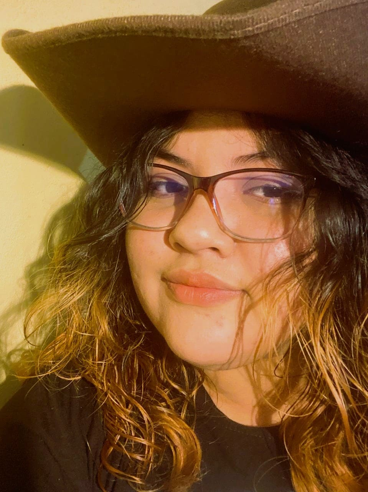
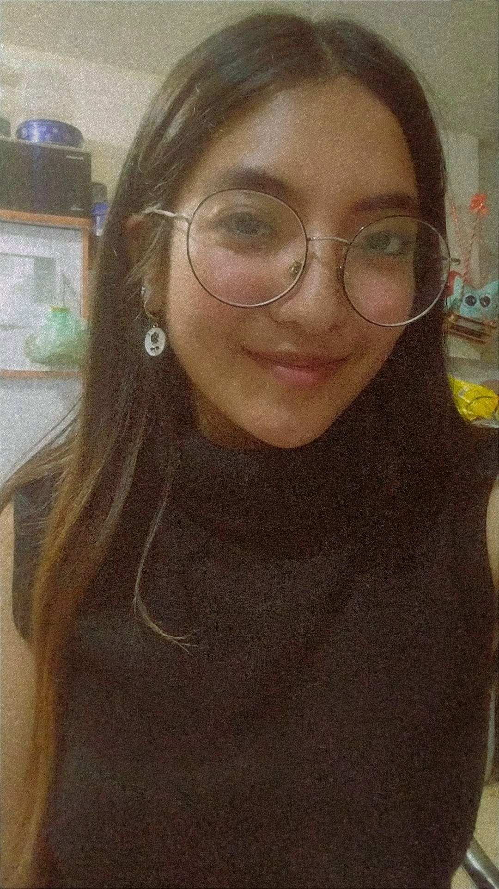
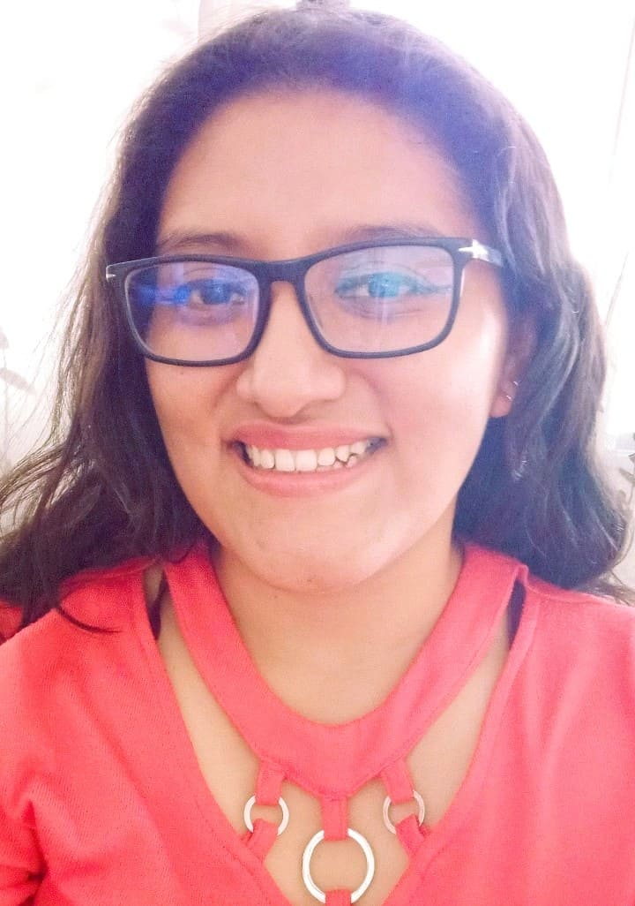
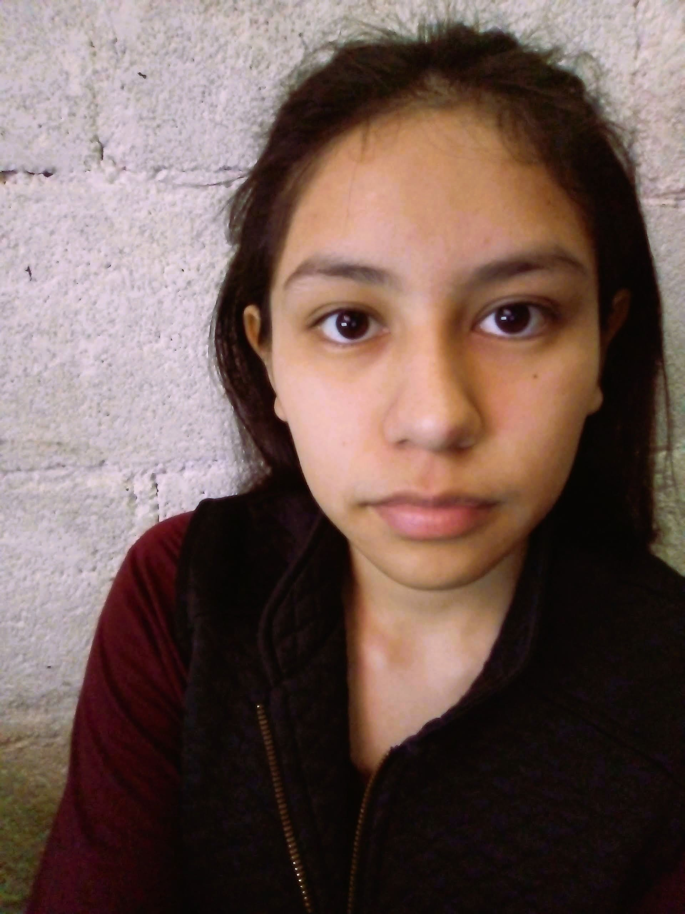

SOBRE NOSOTROS
Esta página web fue creada con el objetivo de informar y enseñar, de forma sencilla e interactiva, sobre la increíble vida marina. Aquí podrás aprender sobre animales del océano como tiburones, ballenas, peces y muchos más.
El sitio está organizado en secciones que explican el tamaño, la alimentación, la forma en que se reproducen y los peligros que enfrentan estos animales. También incluimos datos curiosos para que te diviertas mientras aprendes. La página tiene colores que te hacen sentir en el fondo del mar, imágenes llamativas y botones fáciles de usar, para que explorarla sea una experiencia divertida y educativa.



